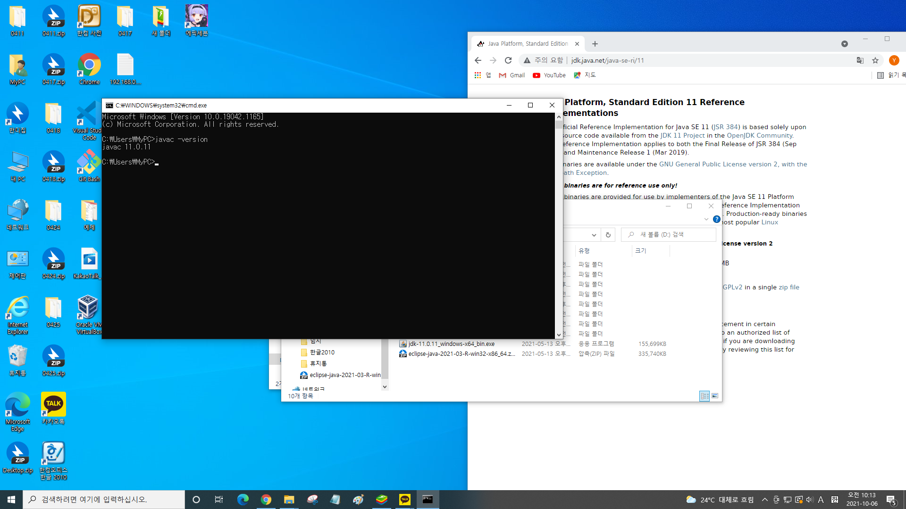
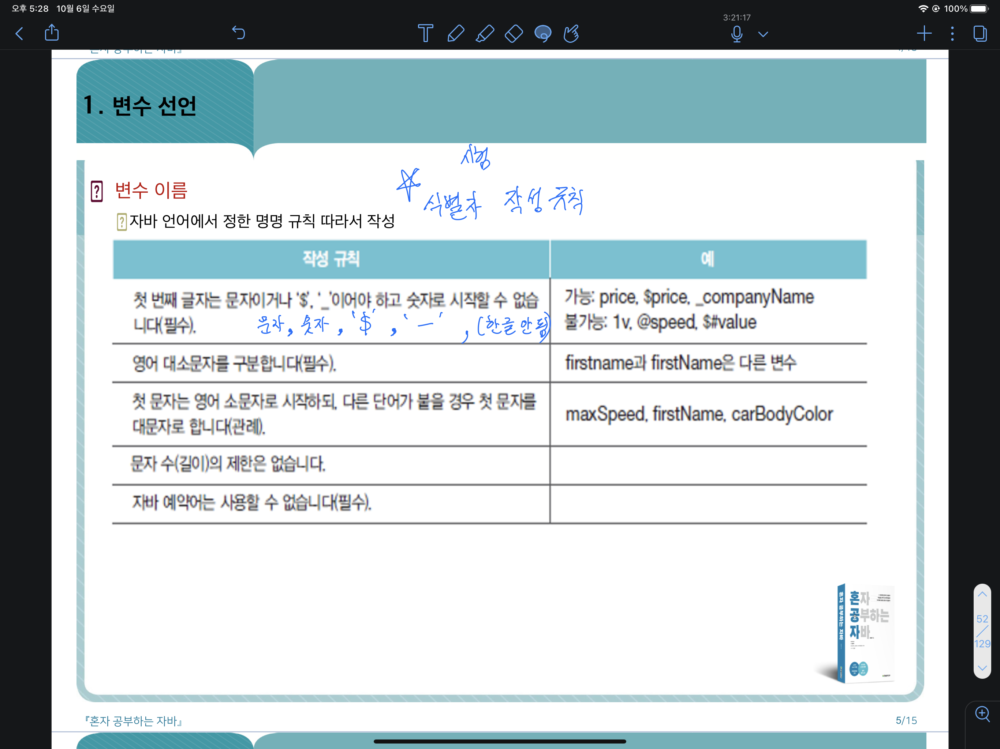
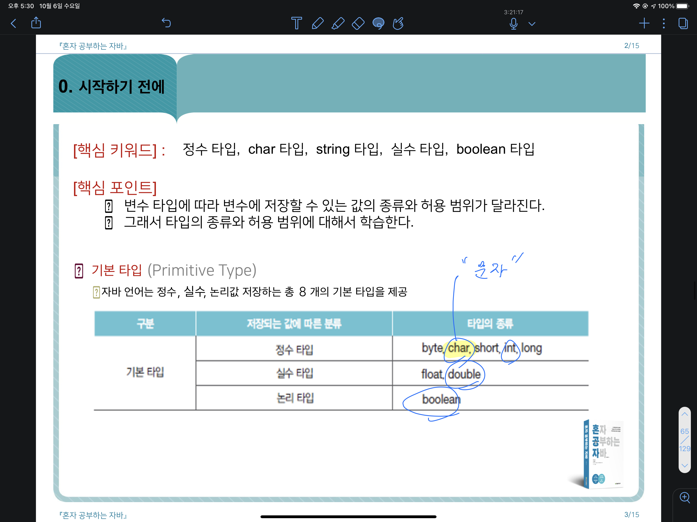
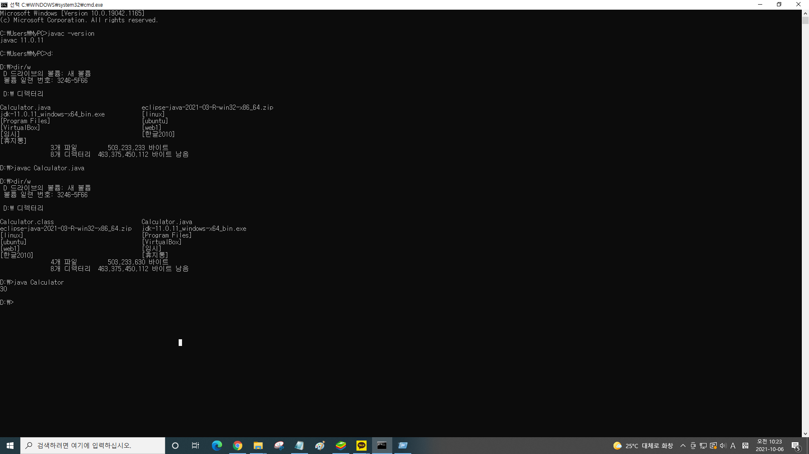
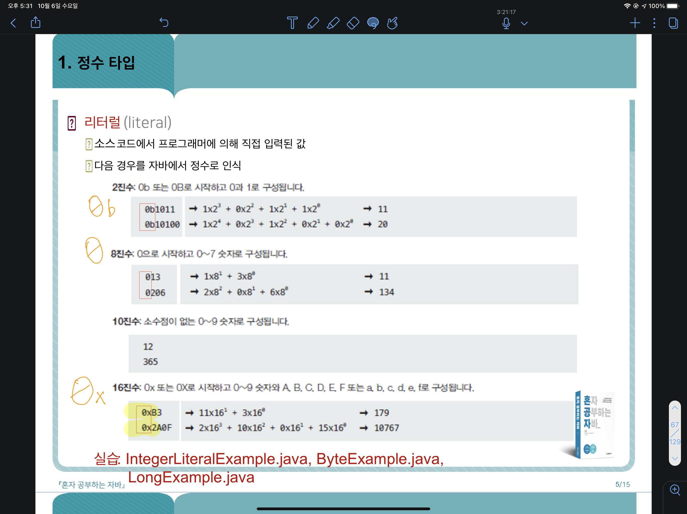
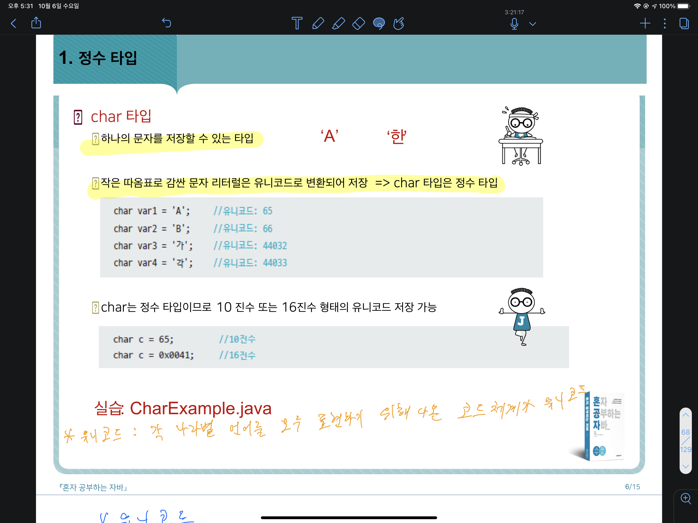
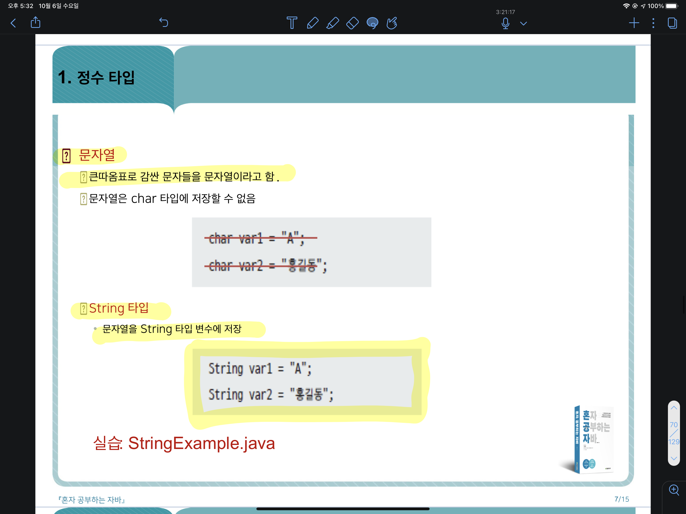
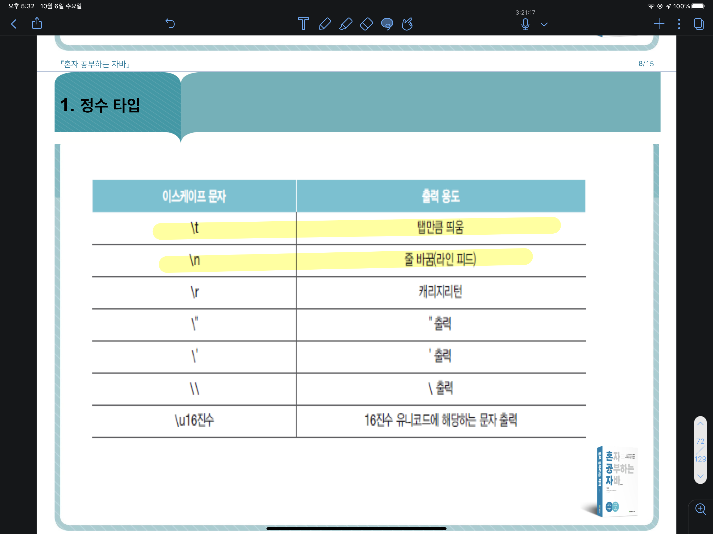
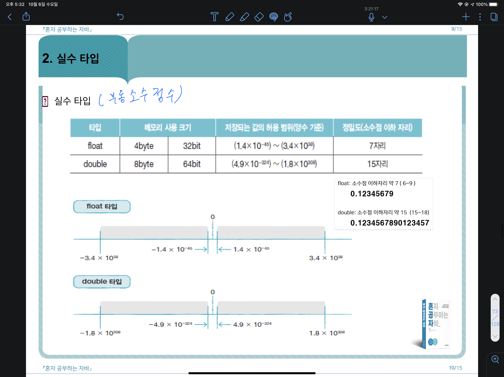
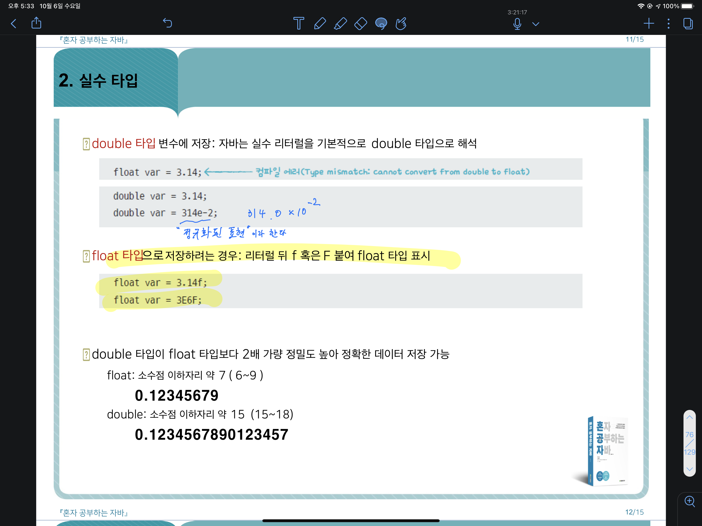

-
자바 시작하기
- JDK 설치하기
- https://www.oracle.com (11버젼 수업용)
- https://www.openjdk.java.net (회사용) 
- 환경설정
- 내 pc , 설정, 고급시스템설정, 고급(탭), 환경변수, 시스템변수 란에 새로만들기, 변수이름 : JAVA_HOME, 디렉토리 찾아보기,
자바 경로 찾아 넣어주기, 확인, 스크롤내려서 path ,편집 ,새로만들기, %JAVA_HOME%\bin, 확인, 확인, 확인 - 윈도우 7 : 시작, 제어판, 시스템및보안, 시스템, 고급시스템설정
- 윈도우 10: 검색, 제어판 입력 후 선택 , 윈도우7 과 동일
- 이클립스 개발 환경 구축
- 싸이트 : http://www.eclipse.org (eclipse-java-2021-03-R-win32-x86_64)
- 무료 오픈 소스 통합 개발 환경(IDE) 제공해주는 툴
- [1단계] 프로젝트 생성
- 변수 
- 기본타입 
JDK 설치 후 CMD에서 설치완료됐는지 체크
번거로우니 이클립스를 설치해주자
변수 선언 규칙이다.
char(한글자 문자형)이 정수형 타입에 속한다!
실수는 float보다 double을 더 자주 쓴다.
long타입은 int타입 허용 범위 초과시 대입하려는 값 뒤에 L을 붙여줘야한다.
실수는 float보다 double을 더 자주 쓴다.
타입별 허용범위 참고
자바 진수형 표기방식(2진수(진법),8진수(진법),10진수(진법),16진수(진법))
한글자는 작은따옴표
쌍따옴표는 한글자라도 문자열 표시이므로 char타입에 대입 불가함
출력참고
실수 범위 참고.
float a= 10.0f;(f표기해야함)
double b= 10.0; (간결하고 허용범위 넓음)
5e2 같은 방식을 정규화된 표현이라 하는데 5.0x10^2방식이라 실수형타입
